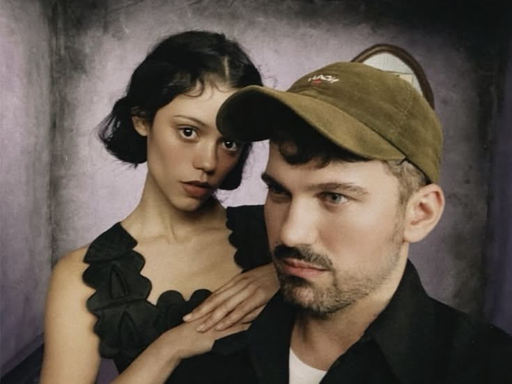
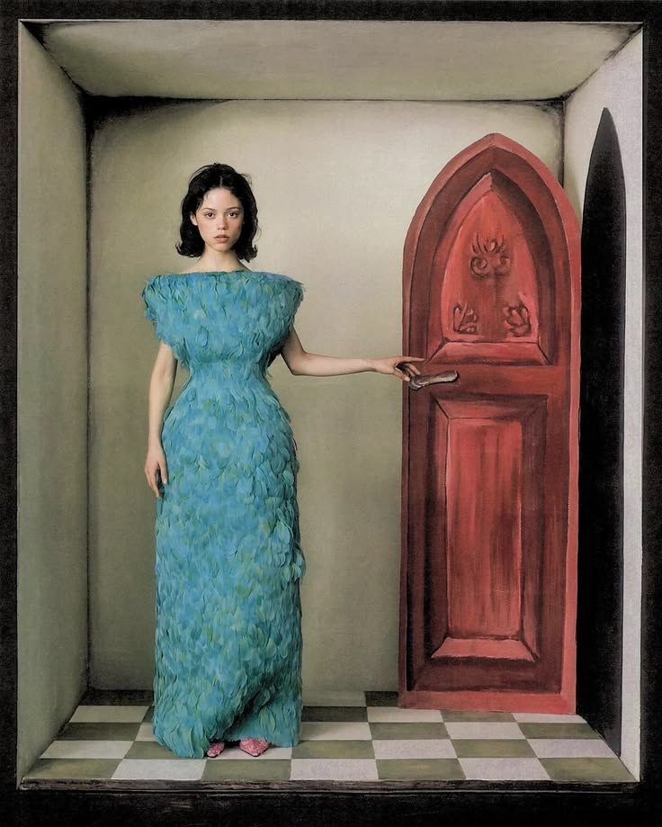

Vogue November 2026
Haz clic y descubre la portada
La edicion de vogue november 2026 estuvo a cargo de Szilveszter Makó y el estilismo de Tabitha Simmons, con una estética pictórica, teatral y surrealista.


Haz clic y descubre la portada

